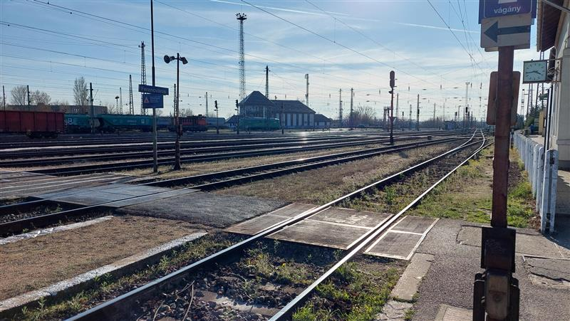
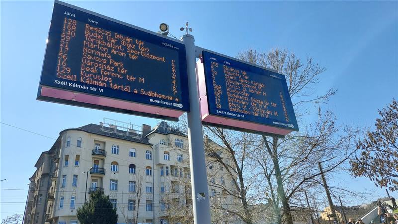

Utak - közlekedés a mai napokban

Míg a magyar úthálózat egész elfogadható Budapest környékén, az utak minőségi még itt is kérdéses...

A városok növekedésével a tömegközlekedés egyre fontosabbá válik. A buszok, vonatok, metrók és villamosok segítik az embereket napi úti céljuk elérésében. Minden közlekedési módnak megvannak az előnyei és hátrányai, melyek ismerete segíti a tudatos választást és...

A közlekedésközpontú várostervezés során a város szerkezetét és működését nagyrészt az határozza meg, hogyan lehet a lehető leghatékonyabban mozogni benne legyen szó autós, tömegközlekedési, kerékpáros vagy gyalogos közlekedésről...